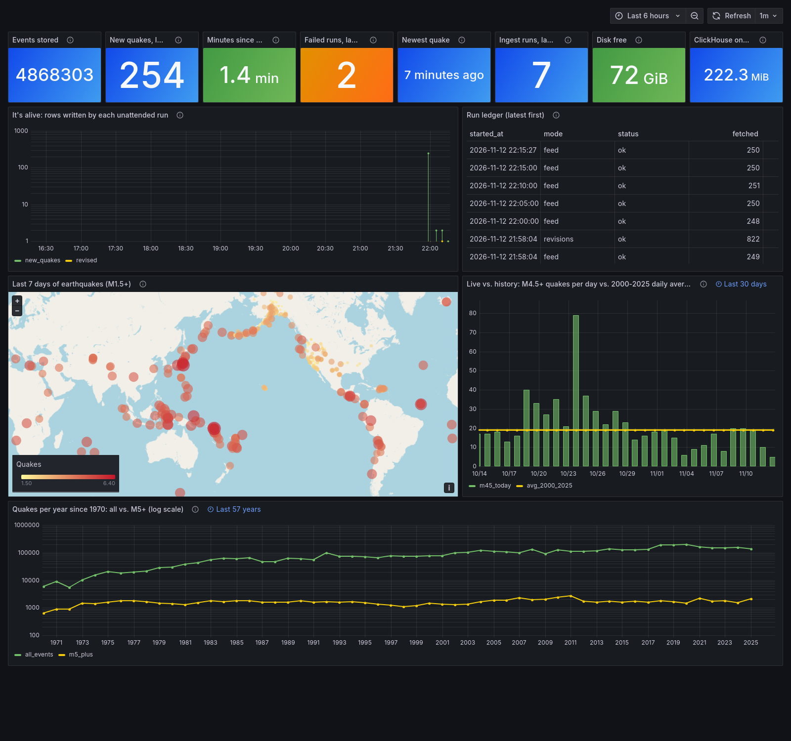

| Stage | Choice | Why |
|---|---|---|
| 1. Source | USGS Earthquakes | No API key. The live feed refreshes every minute, so liveness shows within minutes. USGS revises events (magnitude corrected, automatic → reviewed), which makes idempotency a real requirement rather than a formality. |
| 2. Ingestion | Python loop in a Docker container, every 5 min | The machine is a desktop that stays on, and Docker starts at boot. restart: unless-stopped brings the container back after a crash or reboot, and the loop survives a bad run. 5 min is polite to a CDN-cached feed that's built for polling every minute. The seed is a separate one-time bulk path. |
| 3. Buffer | Skipped | About 300 events/hour from one producer to one consumer. A queue would add a moving part without decoupling anything that needs it. The ledger + watermark already absorbs downtime. |
| 4. Store | ClickHouse (Docker) | A columnar OLAP engine: aggregations over ~5M rows return in milliseconds. ReplacingMergeTree(updated) expresses "keep the newest revision per id" in the table definition. |
| 5. Liveness | Grafana | Works against ClickHouse with a provisioned datasource and dashboard, so the whole stack comes up from docker compose up. |
Idempotency. Each feed run re-fetches 24 hours of quakes, almost all of which we already have. For each fetched row the ingester looks up the stored max(updated) for that id. It inserts a row only if the id is new or the revision is newer, and skips it otherwise. ClickHouse's ReplacingMergeTree(updated) is the second line of defense: rows with the same id collapse to the largest updated during background merges, and queries that must be exact use FINAL. Dedup on id alone would be wrong, because it would keep USGS's first automatic guess forever. The table has no time partition on purpose: merges only dedup within a partition, and origin time itself can be revised.
Seed/trickle gap. The seed covers 1970-01-01 through 2026-11-12 23:59 UTC. The live ingester was already running before the seed load and had fetched the trailing 24 hours, so the two paths overlap rather than leave a gap. The overlapping rows were deduplicated by revision without the loader being told where the seam was.
Failures (API down at 3 a.m.). We backfill rather than skip. Every attempt writes a row to ingest_runs with status ok or error and the error text. The watermark is the end of the last successful live run, so the next run automatically covers what a failed run missed. Up to 23 h behind, the 24-hour feed covers it. Beyond that, the ingester pages through the FDSN API from the watermark (bisecting any window over the 20,000-event limit). Runs that find nothing new are normal and recorded as ok with 0 inserted. Every 6 hours a revisions sweep (updatedafter) picks up corrections to quakes older than 24 h. A Grafana stat panel ("minutes since last good run") turns orange at 15 min and red at 60 min.
Secrets. The three local passwords were generated randomly into .env (mode 600, in .gitignore, excluded from the Docker build context). Containers receive them as environment variables, and Grafana's datasource reads its password from the environment at provisioning time. The ingester sends credentials to ClickHouse in HTTP headers, not URLs. Grafana connects as a separate read-only ClickHouse user. A scan of the repo found 0 occurrences of any .env value in committed files.
Cost. $0.00. Everything runs on my own machine in Docker. USGS requires no key or account. The seed was downloaded once (690 requests) and loaded from local files.
| Historical seed | 4,868,263 events, 1970-01-01 → 2026-11-12 23:59 UTC |
|---|---|
| Download (once) | 690 FDSN requests, 683 monthly .csv.gz files, 236 MB on disk, 19 min 15 s, 0 errors |
| Bulk load | 683 files streamed gzipped into ClickHouse in 13.6 s |
| Storage | 549.28 MiB uncompressed → 222.22 MiB compressed (columnar) |
| Integrity | 4,869,090 physical rows; 4,868,303 after FINAL; 4,868,303 distinct ids. The difference is duplicates not yet merged away, and FINAL hides them at query time. |
| Idempotency | A typical feed run fetches ~250 events and inserts ~1; ~249 are skipped as already stored. Unit tests cover re-running a batch (0 inserted). |
| Seed/trickle seam | 22:00 UTC: 11 seed / 0 live, 23:00 UTC: 7 seed / 0 live, 00:00 UTC: 0 seed / 7 live, 01:00 UTC: 0 seed / 8 live |
| Unattended runs | 6 successful live runs from 2026-11-13 04:58 to 2026-11-13 05:15 UTC, 1 revision sweep(s), 254 new quakes, 1 revisions applied, 0 gaps over 10 min between successful runs |
| Failures | 2 failed runs, both in the first minute (a bug in my insert: a trailing newline in the SQL). They were recorded in the ledger, and the next run re-covered the window. (Those two rows show non-zero 'inserted' counts from before a later fix. Nothing was written.) |
| Live vs. history | 12 M4.5+ quakes in the last 24 h vs. a 2000–2025 average of 19.1/day |
| Dashboard latency | All 13 panels 11–320 ms, including FINAL over ~4.9M rows |
| Disk safety | ClickHouse system logs given a 3-day TTL; container logs capped at 50 MB each |
| Cost | $0.00 |
Grafana, captured Nov 12 10:16 PM Mountain time (times on the dashboard are local; the database stores UTC).

I chose the data source (USGS) and the analytical store (ClickHouse) from the options in the brief. Claude Code (Claude Opus 5.5) wrote the code, the Docker setup and the dashboard, ran the seed, debugged the issues that came up (an HTTP-body/newline parsing bug and a read-only-user permission issue), and drafted this document. I reviewed the design and the results with it; the transcript shows the full conversation.
Code: ~/dev/school/cs452/data-pipeline. Demo video submitted alongside this document.